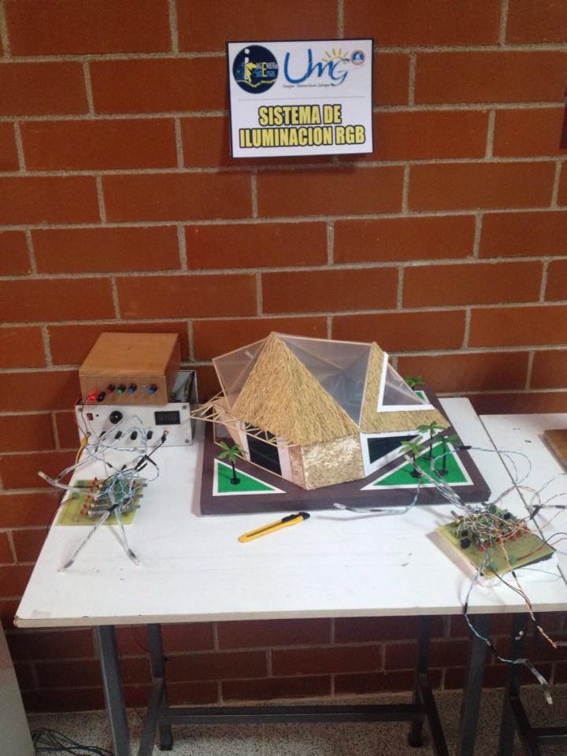

Sistema de Iluminación RGB
Existen distintos tipos de controladores para generar el ambiente deseado o los cambios de color RGB. La elección de un sistema de control RGB u otro dependerá en gran medida del tipo de instalación, del tamaño de esta, y de la cantidad de efectos y funciones que se deseen.